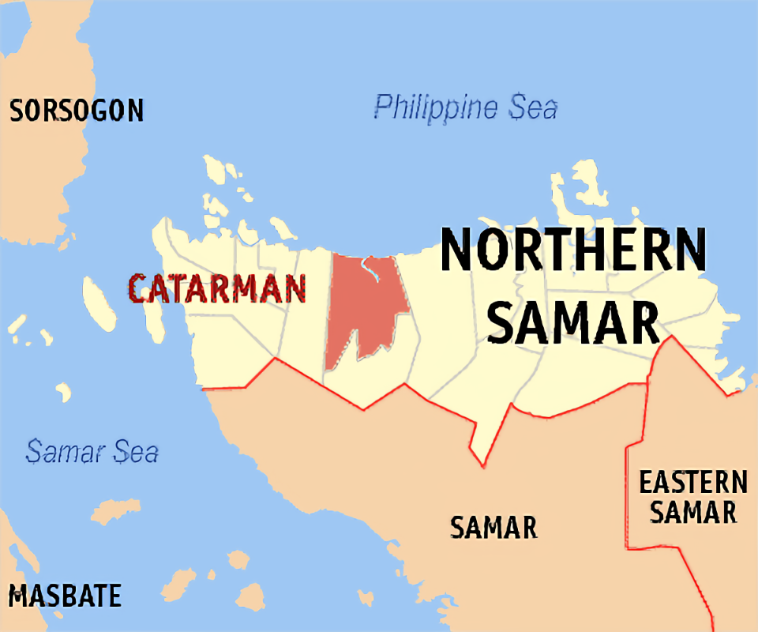

About me
I was born in Northern Samar, Philippines, and moved to Red Deer, Canada, at the age of 10. Now at 19, I am pursuing a diploma in Commputer Programming at Red Deer Polytechnic. I graduated at Lindsay Thurber on 2023, and took a gap year to figure out the course that I would take. Although Computer Programming was not on my mind to pursue just until recently as I was thinking about pursuing Business at first, I ultimately chose this path because of I had been interested in technology (although not on a very deep level) and I enjoy playing games a lot. I hope to learn more about this course in the future!
My interests
I listen to many different genres of music, which is why having my airpods on me at all times is an absolute must. Listening to music is very thereupatic for me and gives me motivation to move throughout the day. I also try to workout as often as I can because I recently gotten more serious about my physical health, for me to increase my overall stamina as I get tired very easily. I watch organizing videos when I want to feel motivated about cleaning my room because its very calming for me. I watch 10 minutes youtube videos everytime I eat and it has become a part of my routine ever since I was younger. I am also interested in Editing, I think it is a very cool skill that I want to learn more about and get good at doing it. That being said my interests are not all long-lasting, I might be interested in one thing for a week or two and then completely lose interest.
My Culture
Growing up in the Philippines for the first ten years of my life has given me irreplacable memories and experiences, a place I call home. My filipino culture is a big part of my identity, the languange, the people, the cuisine, and so much more is something that I will always want to have in my life. My home environment allows these things to be present in my daily life, because my family pretty much makes filipino food almost daily and we speak mixed languages that helps me not forget our mother tongue. When I went back for a 1 month vacation to the Philippines for my 17th birthday,I once again relived the first ten years of my life. Even with the huge difference in weather compared to Canada, it was somewhat familiar to be standing under the scorching sun and the stormy windy rainstorms.
